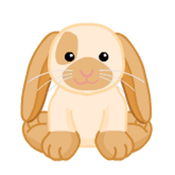
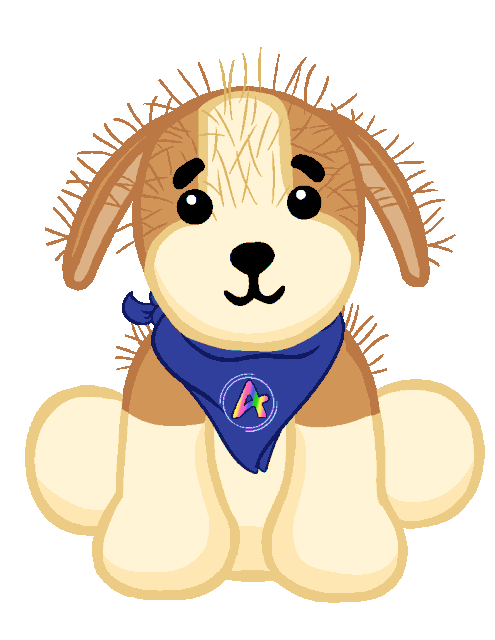
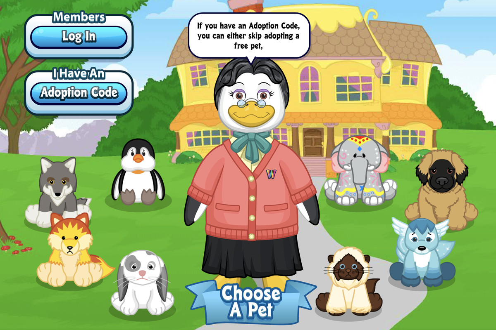
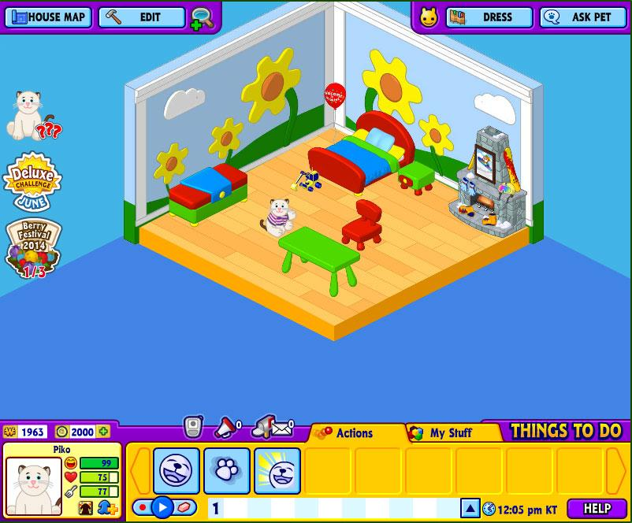
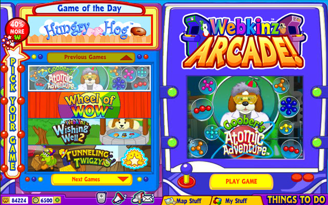

The Webkinz World is an online play area with its own economy completely controlled by Ganz. The user receives money (called KinzCash) by adopting new pets, playing online games, answering general knowledge questions, and through daily activities like clicking "I love my Webkinz!", spinning the Wheel of WOW, playing Wishing Well 2, or completing jobs (minigames) available once every 8 hours. Each day, there is a Game of the Day which can be played for bonus KinzCash, and other bonuses are available each hour, full days on weekends, and afternoons only on weekdays.
 The original Webkinz game is still avaliable for download here: https://www.webkinz.com/
   p>Homepage